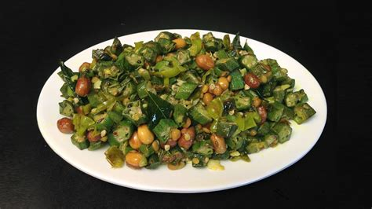

Ladies Finger Fry

Description
Ladies finger fry also known as bendakaya fry in Telugu is a delicious, healthy and easy to make stir fry with ladies finger aka okra, spices, curry leaves and peanuts.
Ingredients
- 250 grams ladies finger (okra or bendakayalu)
- 1 green chili slit or red chili broken
- 1 medium onion sliced thinly or chopped (optional)
- 1 sprig curry leaves
- 2 cloves garlic (crushed or chopped) (optional)
- 1 tsp urad dal (skinned black gram)
- 1 tsp chana dal (bengal gram)
- ¼ tsp mustard seeds
- ½ tsp cumin seeds
- ¼ to ½ tsp red chili powder
- ½ to ¾ tsp coriander powder or garam masala (optional)
- ¼ cup coconut (fresh grated)
- 1 tbsp lemon juice (optional, helps to remove slime)
- 1 pinch turmeric
- ⅓ tsp Salt as needed
- 2 tbsp Oil
- ¼ cup peanuts roasted and skinned (optional)
Steps
- Wash ladies finger and dry them thoroughly. Wipe off with a clean cloth or absorbent papers.
- They should not have any traces of moisture over them otherwise they will become slimy while chopping and frying too. Chop the ladies finger to thin half inch circles.
- Heat a pan with oil.
- Add mustard, cumin, urad dal and chana dal. Fry them until the dal turns golden.
- Add chopped or crushed garlic, curry leaves and slit green chilies or broken red chilies. Fry till the curry leaves turn crisp.
- Optional - Fry onions till translucent. You can also skip them but they impart a nice aroma to the dish.
- Add ladies finger and sprinkle lemon juice.
- Fry till all of the slime goes away. Lemon juice helps to get rid of the sticky substance from the veggie. This takes about 5 to 7 minutes.
- Cover and cook till the ladies finger is slightly tender. Ensure ladies finger is no more slimy only then cover it otherwise they will become more sticky.
- Add coconut, red chili powder, turmeric, coriander powder or garam masala.
- Add the peanuts as well. You can also coarsely crush them and add. If you want the peanuts to remain very crunchy them add them while serving.
- Fry bendakaya vepudu till it begins to smell good for about 2 to 3 minutes. Serve ladies finger fry with rice or phulka.